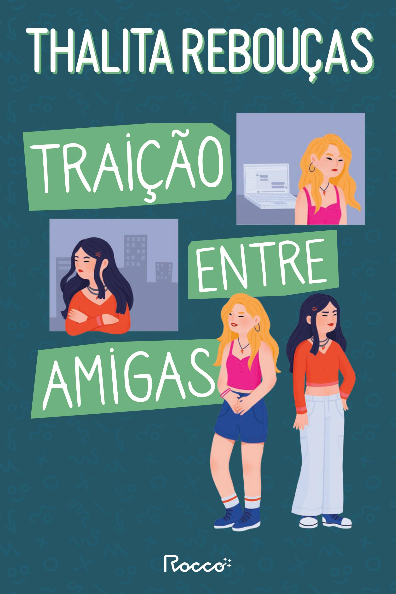
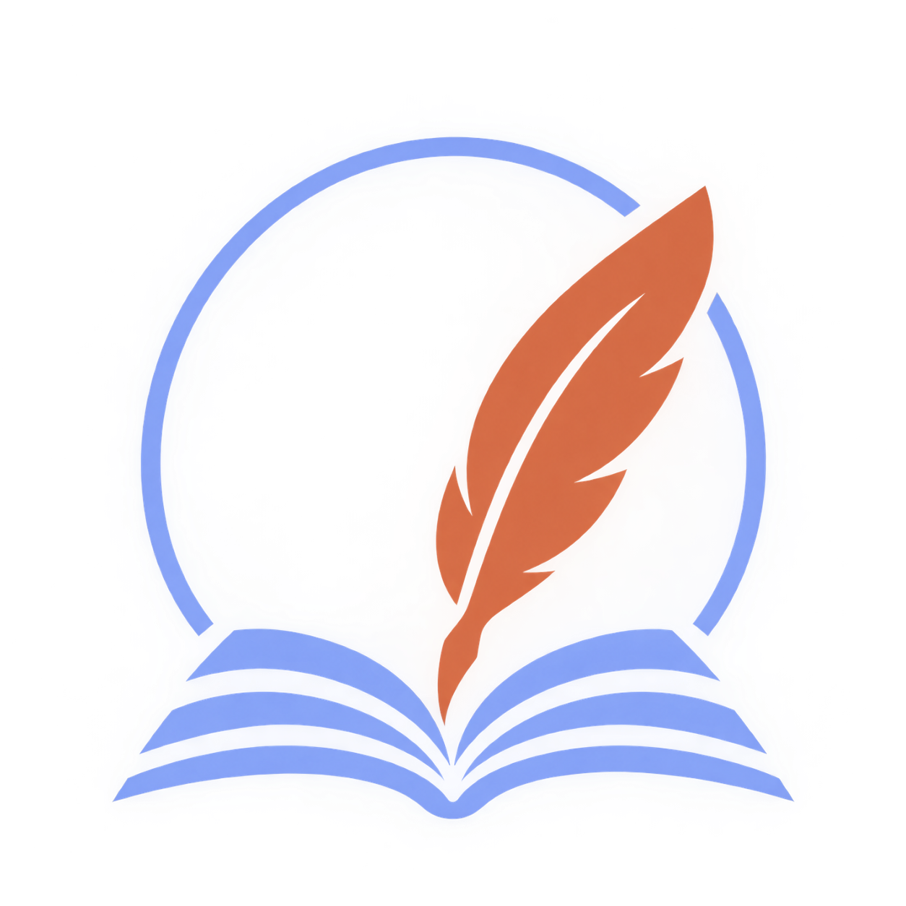
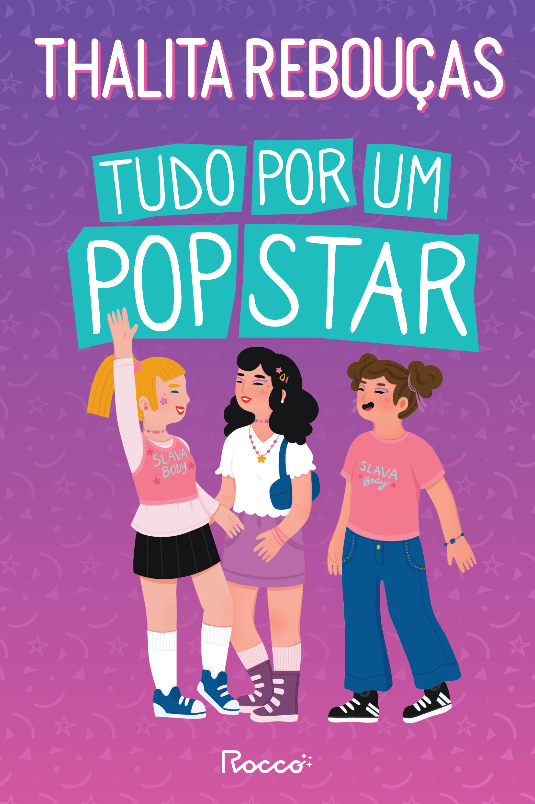
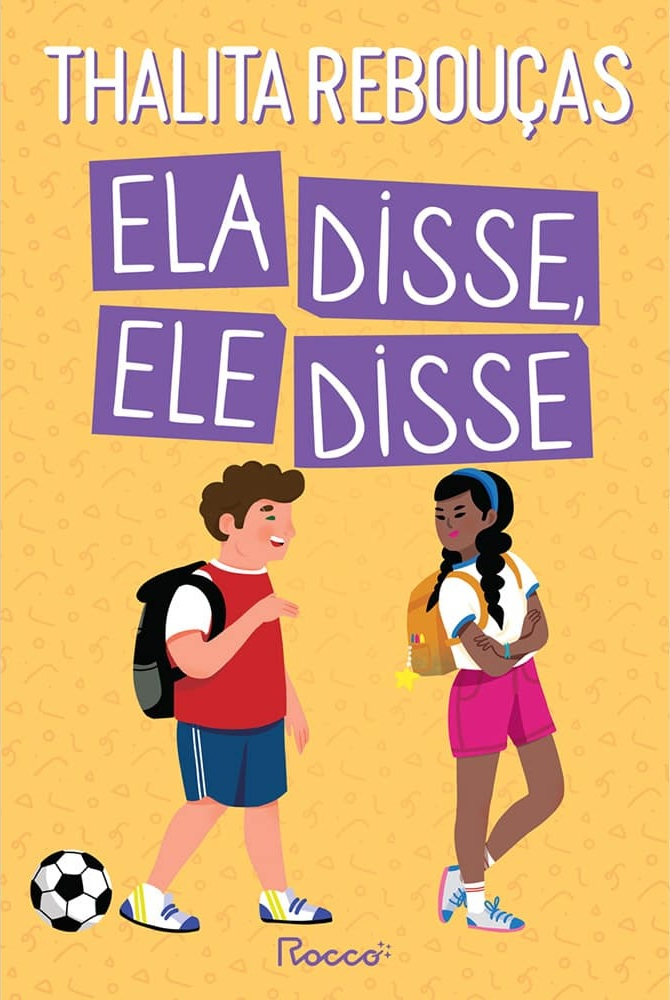

Traição entre Amigas
Data de lançamento: 2000
Duas amigas de infância com personalidades opostas veem a amizade entrar em crise profunda quando uma se envolve com o namorado da outra.

Uma história feita de histórias
Rio de Janeiro,
10 de novembro
de 1974
Escritora e
jornalista
Uma das autoras
brasileiras mais
conhecidas da
literatura juvenil
Thalita Rebouças é uma escritora e jornalista brasileira conhecida por suas histórias leves, divertidas e próximas do universo dos jovens. Nascida no Rio de Janeiro, começou sua carreira no jornalismo antes de se dedicar à literatura.
Com uma linguagem descontraída e personagens que enfrentam situações do cotidiano, Thalita conquistou milhares de leitores, principalmente adolescentes. Seus livros abordam temas como amizade, família, escola, relacionamentos e as descobertas da juventude.
Ao longo de sua carreira, publicou diversos livros de grande sucesso e se tornou um dos principais nomes da literatura juvenil brasileira. Suas histórias também ganharam adaptações para o cinema e ajudaram a aproximar muitos jovens do hábito da leitura.

Duas amigas de infância com personalidades opostas veem a amizade entrar em crise profunda quando uma se envolve com o namorado da outra.

Três melhores amigas do interior fazem loucuras inacreditáveis e passam por muitos sufocos para assistir ao show de sua boyband favorita.
Mostra com muito bom humor os conflitos, broncas e o amor cotidiano entre a jovem Malu e sua mãe superprotetora.

Dois adolescentes tentam se adaptar a uma escola nova em uma história contada sob duas perspectivas: o ponto de vista dele e o dela.
Tetê enfrenta o bullying, problemas de autoestima e as inseguranças da adolescência ao precisar recomeçar a vida em um colégio novo.
Uma garota cansada de sempre tentar agradar a todos para evitar brigas na família decide finalmente mostrar quem ela é de verdade.
Uma carreira construída entre o jornalismo e a literatura.
Thalita começou sua carreira profissional no jornalismo, experiência que contribuiu para o desenvolvimento de sua escrita e comunicação.
Com o tempo, passou a se dedicar à literatura e construiu uma carreira voltada principalmente para o público jovem.
Suas histórias conquistaram leitores e algumas de suas obras também chegaram ao cinema.